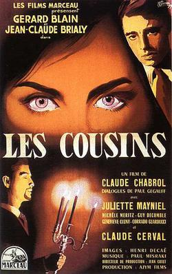

Les Cousins

Claude Chabrol
1959
110 minutes
Wikipedia link
IMDB link
TV Tropes link
This is text.
Time to choose something different:
- This didn't do it for me. Maybe a rockumentary would be more my speed... - Turn to section 207
- Living near family members can be stressful, especially when your neighbors are also weirdos! - Turn to section 219
- Got anything else by Chabrol? Preferably with some serial murders... - Turn to section 199